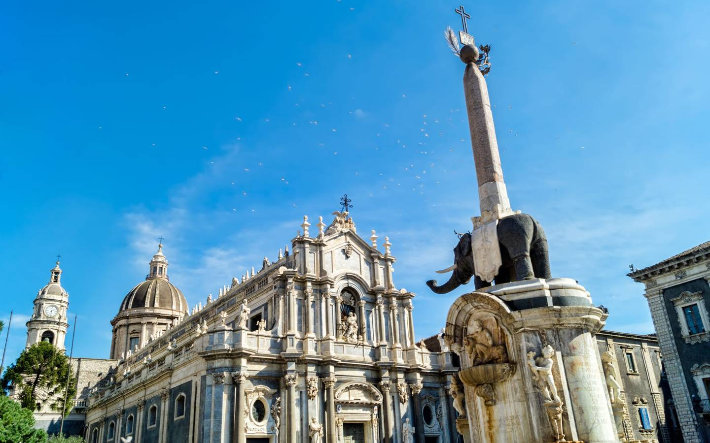
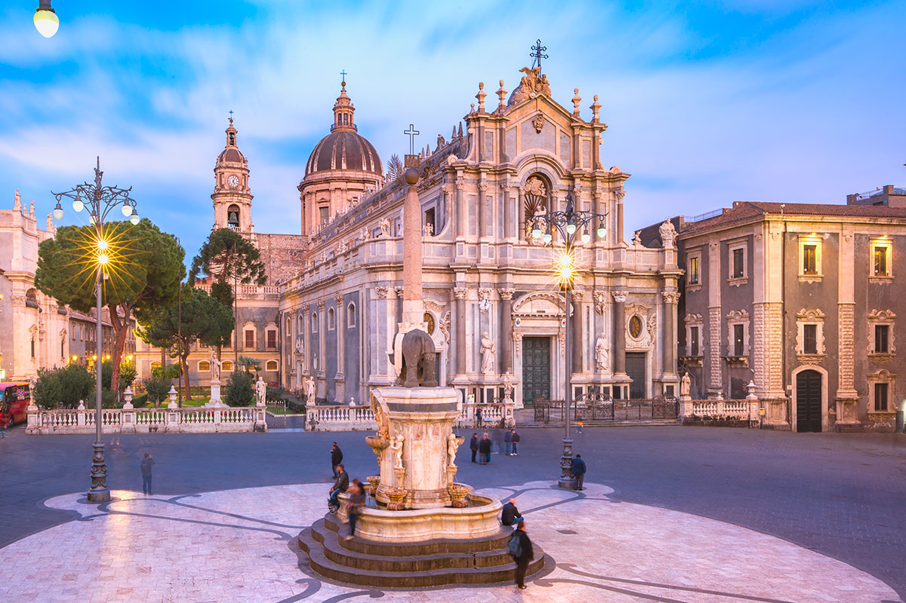

Catania
Piazza del Duomo a Catania è il trionfo del contrasto: un'opera d'arte in bianco e nero scolpita nella lava e nel calcare. È il cuore di una città che è stata capace di rinascere dalle proprie ceneri, letteralmente, dopo l'eruzione del 1669 e il terremoto del 1693. Dichiarata Patrimonio dell'Umanità dall'UNESCO, Piazza del Duomo è il salotto barocco di Catania ed il simbolo della sua resilienza. Progettata dall'architetto di origini messinesi Gian Battista Vaccarini, la piazza è un esempio magistrale di urbanistica barocca, dove ogni edificio concorre a creare uno spazio armonioso, monumentale e profondamente scenografico. Al centro esatto della piazza domina la Fontana dell'Elefante, il vero nume tutelare della città. La sua architettura è un affascinante puzzle di epoche e simboli. Scolpito in un unico blocco di pietra lavica di epoca romana, il pachiderma è il simbolo della città sin dal Medioevo, chiamato dai catanesi "u Liotru", storpiatura del nome del leggendario mago Eliodoro. Sulla groppa dell'elefante poggia un obelisco egizio in granito, decorato con geroglifici legati al culto della dea Iside. La composizione, che ricorda l'elefante dei Bernini a Roma, simboleggia la protezione della città e la sua antica storia millenaria.

Il lato est della piazza è occupato dalla maestosa Cattedrale di Sant'Agata. La sua facciata, realizzata dal Vaccarini su tre ordini di colonne, utilizza il contrasto cromatico tra il calcare bianco e il granito grigio per creare profondità. All'interno del Duomo, oltre alle spoglie della Santa patrona Agata, è custodita la tomba del celebre compositore catanese Vincenzo Bellini. Le mura della chiesa inglobano parti delle antiche Terme Achilliane romane, visibili visitando i sotterranei. Posto a nord, il Palazzo degli Elefanti è la sede del Municipio. La sua architettura chiude perfettamente la prospettiva settentrionale. Probabilmente, scendendo dalla scalinata c'è il suggestivo Arco di Carlo V. Sul lato sud, il Palazzo dei Chierici, collegato alla Cattedrale tramite il suggestivo Arco di Carlo V. Questo edificio è caratterizzato da un intonaco scuro rivestimento con sabbia vulcanica o decorazioni in pietra bianca, un richiamo visivo costante all'anima dell'Etna. Nell'angolo sud-ovest della piazza, tra il Palazzo dei Chierici e il Palazzo degli Elefanti, si trova la Fontana dell'Amenano. In marmo di Carrara, la fontana celebra l'omonimo fiume che un tempo scorreva in superficie e che ora fluisce sotto la città dopo l'eruzione del 1669.

Proprio alle spalle della Fontana dell'Amenano, scendendo una breve scalinata in pietra lavica, ci si immerge bruscamente in un mondo diverso: la Pescheria, il storico mercato del pesce di Catania. Se Piazza del Duomo è il volto ufficiale della città, la Pescheria ne è l'anima cruda e autentica. Il mercato sorge proprio sopra il fiume Amenano che scorre sotterraneo, e non è raro vedere l'acqua scorrere tra le basole, mantenendo l'aria fresca e carica di salsedine. Un'esperienza sensoriale: visitare la Pescheria significa attraversare un tunnel di odori, sapori e tradizioni millenarie locali. È qui che i visitatori si rendono conto di essere un turista per davvero, parte integrante di un organismo che pulsa di vita propria.
Catania e il suo cuore barocco raccontano una storia di distruzione e rinascita. Il terremoto del 1693 rase al suolo l'intera città, ma anziché scomparire, Catania rinacque più bella e ambiziosa di prima. Gli architetti del tempo, guidati dal Vaccarini, trasformarono la necessità in opportunità, ridisegnando interi quartieri secondo i canoni del barocco siciliano: facciate sinuose, scalinate monumentali, cortili segreti. Oggi quella straordinaria stagione creativa è riconosciuta dall'UNESCO come uno dei capolavori dell'ingegno umano, un patrimonio da custodire e tramandare alle generazioni future.